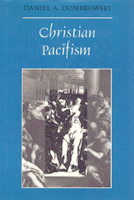

<body bgcolor="#FFFFFF" text="#000000" link="#0000FF" vlink="#CC0000" alink="#CC0000"><center><hr width="350" size="1" align="center" noshade>A concentrated defense of pacifism arguing that war is philosophically irreconcilable with Christianity<hr width="350" size="1" align="center" noshade><p><a href="https://cdcshoppingcart.uchicago.edu/Cart/ChicagoBook.aspx?ISBN=9780877228028&&PRESS=temple" target="_top">Buy this book!</a> | <a href="https://cdcshoppingcart.uchicago.edu/Cart/Cart.aspx?PRESS=temple" target="_top">View Cart</a> | <a href="https://cdcshoppingcart.uchicago.edu/Cart/Cart.aspx?PRESS=temple" target="_top">Check Out</a></p><p></p></center><!--none//--><h1>Christian Pacifism</h1>
<h3>Daniel A. Dombrowski</h3>
<P>cloth 0-87722-802-7 $52.50, Apr 91, <FONT COLOR=#990033>Out of Stock Unavailable</FONT>
<br>Electronic Book 1-59213-079-8 $29.95 <FONT COLOR=#990033>Out of Stock Unavailable</FONT>
<BR> 240 pp
</P><BLOCKQUOTE><I>"This work is well written and will be a good book for generating discussion in social and political philosophy.... A useful statement of an important position."</I>
<br>&#151<b>George I. Mavrodes</b>, Department of Philosophy, University of Michigan<I></I></BLOCKQUOTE>
<p>Arguing that war is philosophically irreconcilable with Christianity, Daniel Dombrowski contradicts just war theorists, whose position can be traced to Church figures&#151notably Tomas Acquinas. While the roots of pacifism lie in the teachings of Jesus, Dombrowski relies as much on philosophical argument as on theological exegesis or speculation. Classical sources (the Bible, Saint Augustine, Saint Thomas Aquinas) are treated along with several contemporary scholars and pacifists, among them: Elizabeth Anscombe, Paul Ramsey, James Turner Johnson, Michael Walzer, Richard Wasserstrom, Douglas Lackey, Martin Luther King, Jr., Gandhi, Jenny Teichman, Charles Hartshorne, George Weigel, and Finnis-Boyle Grisez. His intent is to provide a concentrated defense of pacifism that will be useful for scholars who are interested in strengthening the intellectual rigor of their views or to just war theorists who are bewildered by pacifism as an intellectual stance.
<p>Never a popular position, the concept of pacifism has been diluted, if not circumvented, by both philosophers and artists. Dombrowski responds to its unfavorable position during most of the history of Christianity through a Platonic analysis of the negative effect art has had on Christian pacifism. He shows how both visual art and dance have created significant obstacles to the portrayal of Jesus the peacemaker. The author also considers the connection between philosophy of religion and pacifism.
<p><I>Christian Pacifism</I> offers a clear overview of most of the major differences among pacifists, just war theorists, and "war is hell" theorists. The book avoids parochialism throughout, so it is of interest not only for Christians.
<BR>&nbsp;<h2>Reviews</h2>
<p><I>"Dombrowski's approach is refreshing. He does not mind taking on all comers from Augustine and Aquinas to Ramsey and Anscombe. He is philosophically committed
to Christian Pacifism and suggests strongly its and his own rational strength."</I>
<br>&#151<b>Daniel T. Regan</b>, Director, Center for Peace and Justice Education, Villanova University
<BR>&nbsp;<h2>Contents</h2><P>
<p>Preface
<br>1. Pacifism: A Thorn in the Side of Christianity
<br>2. The Pragmatic Death of the Just War Theory
<br>3. What Does "War Is Hell" Mean?
<br>4. A Platonic Interlude
<br>5. Gandhi, Sainthood, and Nuclear Weapons
<br>6. A Classification of Christian Pacifisms
<br>7. On Future Wars
<br>8. Pacifism and Philosophy of Religion
<br>Epilogue: The Counterattack by Just War Theorists
<br>Notes
<br>Bibliography
<br>Index of Names
</P><BR>&nbsp;<H2>About the Author(s)</H2>
<table><tr><td valign="top"><img src="/tempress/authors/797_au.gif" height="90" width="75"></td><td width="100%" valign="middle"><p><b>Daniel A. Dombrowshi</b>, Associate Professor of Philosophy at Seattle University, has written numerous articles and five other books, including <I>Hartshorne and the Metaphysics of Animal Rights</I>.</P></td></tr></table>
<BR><H2>Subject Categories</H2>
<p><A HREF="/tempress/religion.html" TARGET="_top">Religion</a>
</p>
<BR><h2 class="inpageheading">In the series</H2>
<P><I><a href="http://www.temple.edu/tempress/ethics_action.html" onMouseOver="window.status='Click for other books in this series!'; return true;" onMouseOut="window.status=''; return true;" target="_top">Ethics and Action</a></i>, edited by Tom Regan.
</p><p>No longer active.</p>
<p align="center"><a href="https://cdcshoppingcart.uchicago.edu/Cart/ChicagoBook.aspx?ISBN=9780877228028&&PRESS=temple" target="_top">Buy this book!</a> | <a href="https://cdcshoppingcart.uchicago.edu/Cart/Cart.aspx?PRESS=temple" target="_top">View Cart</a> | <a href="https://cdcshoppingcart.uchicago.edu/Cart/Cart.aspx?PRESS=temple" target="_top">Check Out</a></p><p><font face="Arial" size="1"><a href="copyright.html" onMouseOver="window.status='Web Copyright Policy';return true;" onMouseOut="window.status=''" title="Web Copyright Policy">&copy;</a> 2015 <a href="http://www.temple.edu" target="new" onMouseOver="window.status='Link to Temple University home page';return true;" onMouseOut="window.status=''" title="Link to Temple University home page">Temple University</a>. All Rights Reserved. http://www.temple.edu/tempress/titles/797_reg.html</font></p>